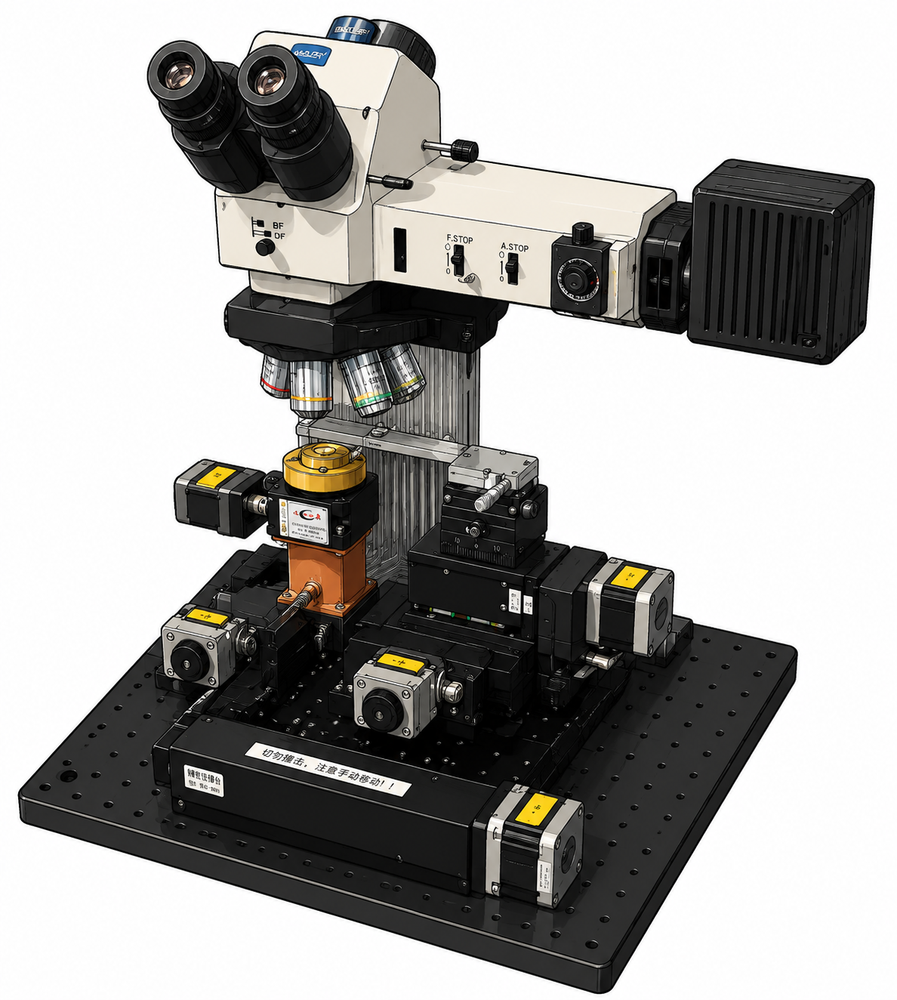

X1
整体左右
Y1
整体前后
MicroscopeZ
显微镜上下
Z
载玻片升降
X3
吸附台左右
Y3
吸附台前后
X2
载玻片左右
Y2
载玻片前后
R
样品旋转
显微镜调整
MicroscopeZ
显微镜上下位移
pulse 0
连续 上
点动 上
停止
点动 下
连续 下
速度 (um/s)
步长 (um)
物镜选择
5X
10X
20X
40X
50X
位置标定
X1
目前位置
mm
实际位置
mm
取消
应用